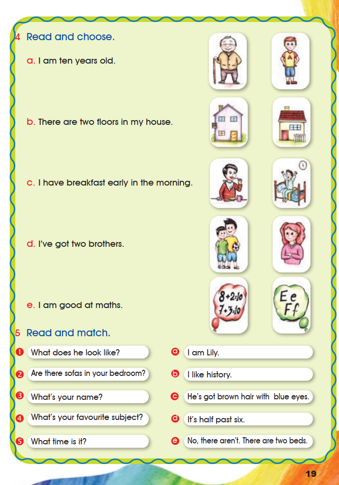

Pupil’s Book
School Subjects · pages 15–20. The complete original source scans below preserve printed content and layout.
Pupil’s Book · page 15
Original source scan 1, preserved byte-for-byte. This page includes all visible exercises, directions, examples and illustrations exactly as supplied.

Accessible text transcription · page 15
5 · School Subjects
1. Listen and number.
2. Listen again and repeat.
3. Ask and answer.
What is your favourite subject?
My favourite subject is English.
I love history.
I am good at art.
I like maths.
4. Ask and answer.
Sports and school-subject illustrations are shown with the listening task; no recording was supplied.The complete untouched scan above remains the reference for its illustrations, alignment, tick boxes and picture matching. No missing listening transcript or answer is inferred.
Image provenance and source details
Upload image 1; allocated only to Lesson 5 Pupil’s Book; source page 15. SHA-256 is recorded in the source manifest.
Open original scanAudio limitation: the printed listening task is visible in the scan, but its recording and transcript were not supplied. No listening answers are invented.
Pupil’s Book · page 16
Original source scan 2, preserved byte-for-byte. This page includes all visible exercises, directions, examples and illustrations exactly as supplied.

Accessible text transcription · page 16
4. Ask and answer.
Maths isn’t difficult.
History is great.
English is easy.
Art is interesting.
Arabic isn’t boring.
5. Before you read, match.
boring · useful · great · difficult
not easy to do. · helping you to do what you want. · not interesting in any way. · having an effect on people’s lives.
6. Read and do the tasks below.
Hello, I’m Ali. I’m going to tell you about my school subjects. I like English and Arabic very much, they are very easy. But my favourite subject is geography, it is quite useful. Science is very interesting for me. I also love history, it’s great and important. Maths isn’t difficult and I like it. Music class and sports are fun but I am not good at art.
a. Tick ✓ or cross ✗.
1. English isn’t difficult for Ali. 2. He is not good at art. 3. Ali’s favourite subject is science. 4. Music class is boring for Ali. 5. He doesn’t like maths.
b. Read and match.
Fun · Easy · Interesting · Useful. The four subject illustrations are retained in the source scan.The complete untouched scan above remains the reference for its illustrations, alignment, tick boxes and picture matching. No missing listening transcript or answer is inferred.
Image provenance and source details
Upload image 2; allocated only to Lesson 5 Pupil’s Book; source page 16. SHA-256 is recorded in the source manifest.
Open original scanPupil’s Book · page 17
Original source scan 3, preserved byte-for-byte. This page includes all visible exercises, directions, examples and illustrations exactly as supplied.

Accessible text transcription · page 17
Let’s Learn
What’s your favourite subject?
My favourite subject is art.
I love Arabic.
I like history.
I am good at maths.
Geography is interesting.
Sports is fun.
Science is useful.
7. Reorder.
1. is / geography / favourite / subject / My
2. good / am / English / at / I
3. is / useful / science
8. Write about your subjects.
I like …
My favourite subject is …
… is interesting.
… is difficult.
I love …
I am good at …The complete untouched scan above remains the reference for its illustrations, alignment, tick boxes and picture matching. No missing listening transcript or answer is inferred.
Image provenance and source details
Upload image 3; allocated only to Lesson 5 Pupil’s Book; source page 17. SHA-256 is recorded in the source manifest.
Open original scanPupil’s Book · page 18
Original source scan 4, preserved byte-for-byte. This page includes all visible exercises, directions, examples and illustrations exactly as supplied.

Accessible text transcription · page 18
Revision 1
1. Read and choose.
Hello! I am Bill. I am 11 years old. I live in Italy with my family in a big house. I have two brothers, John and Carlos. They are tall and thin. I usually get up early to go to my school. I like maths but I love geography.
1. His name is Bill / John.
2. He lives in Syria / Italy.
3. He lives in a big house / flat.
4. He has a brother and a sister / two brothers.
2. Read and correct the underlined mistakes.
1. There is two beds and a wardrobe in my bedroom.
2. I like history but my friend like English.
3. Lily always wake up at 7 o’clock in the morning.
4. Dana are 12 years old.
5. Sally is brown eyes.
3. Read and unscramble the word.
1. s i t H o y r … is interesting.
2. c A a b r i … I am good at …
3. e e m t … Nice to … you Luna.
4. e e y s … She’s got blue …
5. c o o c ’ k l … I usually have breakfast at 7 … in the morning.The complete untouched scan above remains the reference for its illustrations, alignment, tick boxes and picture matching. No missing listening transcript or answer is inferred.
Image provenance and source details
Upload image 4; allocated only to Lesson 5 Pupil’s Book; source page 18. SHA-256 is recorded in the source manifest.
Open original scanPupil’s Book · page 19
Original source scan 5, preserved byte-for-byte. This page includes all visible exercises, directions, examples and illustrations exactly as supplied.

Accessible text transcription · page 19
4. Read and choose.
a. I am ten years old.
b. There are two floors in my house.
c. I have breakfast early in the morning.
d. I’ve got two brothers.
e. I am good at maths.
5. Read and match.
1. What does he look like?
2. Are there sofas in your bedroom?
3. What’s your name?
4. What’s your favourite subject?
5. What time is it?
a. I am Lily.
b. I like history.
c. He’s got brown hair with blue eyes.
d. It’s half past six.
e. No, there aren’t. There are two beds.The complete untouched scan above remains the reference for its illustrations, alignment, tick boxes and picture matching. No missing listening transcript or answer is inferred.
Image provenance and source details
Upload image 5; allocated only to Lesson 5 Pupil’s Book; source page 19. SHA-256 is recorded in the source manifest.
Open original scanPupil’s Book · page 20
Original source scan 6, preserved byte-for-byte. This page includes all visible exercises, directions, examples and illustrations exactly as supplied.

Accessible text transcription · page 20
Project
Choose one of these projects.
1. Time is important! Let’s work together to make a nice clock.
2. Back to school… Let’s make our identity card…
Glue Photo here · Thumb Print
Name · Date of Birth · Weight · Height · Address · Eye Colour · Hair ColourThe complete untouched scan above remains the reference for its illustrations, alignment, tick boxes and picture matching. No missing listening transcript or answer is inferred.
Image provenance and source details
Upload image 6; allocated only to Lesson 5 Pupil’s Book; source page 20. SHA-256 is recorded in the source manifest.
Open original scanPersonal practice drafts are saved in this browser; source scans remain unchanged.